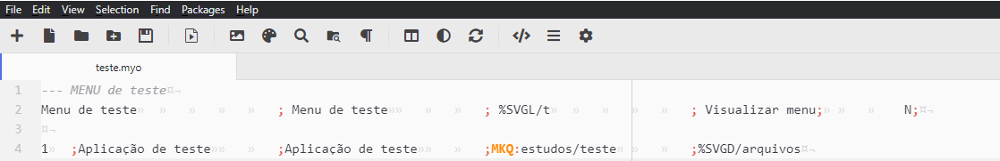
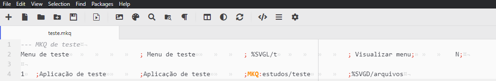

Arquivo do tipo MyOptions a ser executado por Menu.JAR. Neste arquivo são definidas
informações características de cada Menu, como: nome do Menu, imagem de fundo, controle de acesso e suas aplicações (MKQ’s e MKP’s). Pode-se dividir a estrutura deste
arquivo em duas linhas paramétricas chamadas de linha de cabeçalho e linha de opções.
É o arquivo de onde nasce o menu de aplicações e deverá sempre se encontrar na pasta options.

Abra o editor de texto de sua preferência, crie um novo arquivo e o nomeie como desejar, lembre-se de salvá-lo com .MYO na pasta options, dentro da pasta raiz otmtech.
O primeiro passo para a criação do menu é a configuração da linha de cabeçalho, onde iremos definir título do menu, imagem e outras opções.
Obs: por boa prática, recomenda-se utilizar a primeira linha de código como comentário.
Vamos começar com uma linha de cabeçalho base para facilitar. Fique a vontade para personalizá-la!
Menu de teste; Menu de teste; %SVGL/t; Visualizar menu; N;
O segundo passo é a configuração da linha de opções, onde definiremos os detalhes da aplicação que desenvolveremos depois.
1 ;Aplicação de teste ;Aplicação de teste ;MKQ:estudos/teste ;%SVGD/arquivos
O resultado deve ser algo parecido com a imagem abaixo:

Seu menu está criado! Obviamente ainda sem nenhuma aplicação, para aprender a desenvolver uma aplicação simples, vá até criando uma aplicação